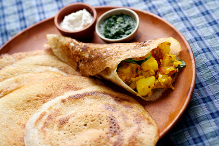

home
Masala Dosa | Indian Recipes
Indian Recipes: Masala Dosa

Description
Masala dosa is a variaton of the popular South Indian
dosa which is a thin pancake made from a batter consisting of lentils and
rice.
Its preperation varies substantially from city to city but is generally
considered to be a type of dosa stuffed with a potato filling.
Ingredients
for the dosa batter...
- 2 cups short-grain rice
- 1/2 cup split husked black lentils
- 1 teaspoon fenugreek seeds
- Vegetable oil
for the potato filling...
- 3 tablespoons vegetable oil
- 1 teaspoon mustard seeds
- 1/2 teaspoon cumin seeds
- 2 small dried hot red peppers
- 1 medium onion, sliced
- 1/2 teaspoon salt
- Pinch of asafetida
- 1 tablespoon grated ginger
- 6 to 8 curry leaves
- 3 garlic cloves, minced
- 2 small green chiles, filely chopped
- 1 1/2 pounds yellow-fleshed potatoes, boiled, peeled and cubed
- 1/2 cup chopped cilantro, leaves and tender stems
Recipe
First we will make the dosa dough...
-
Put the rice in a bowl, rinse well and cover with 4 glasses of cold
water.
-
Put the lentils and fenugreek seeds in a small bowl, rinse well and add
enough cold water to cover.
- Soak both for 4 to 6 hours.
-
Drain the rice and lentil-fenugreek mixture in separate colanders.
- Put the rice in a food processor, blender or wet-dry grinder.
- Add 1 cup of cold water and make a smooth paste.
-
It will take about 10 minutes and it may be necessary to work in groups.
- Repeat the process with the lentil-fenugreek mixture.
- Combine the two pastes in a medium mixing bowl.
-
Whisk together, adding enough water to make a medium-thick dough.You
should get about 6 glasses.
-
Cover the bowl with a kitchen towel and place in a warm place.Allow to
ferment for about 8 hours until the surface is bubbly.
-
Mix with salt. Use the dough immediately or refrigerate for later use.
Next we will make the potato filling...
- Put vegetable oil in a large skillet over medium heat.
-
When the oil is rippling, add the mustard seeds and cumin seeds.Let the
seeds pop for about 1 minute, then add the paprika and onion.
- Cook, stirring, for about 5 minutes, until the onions soften.
-
Season lightly with salt. Add turmeric, asafetida, ginger, curry leaves,
garlic, and green chile. Stir to coat and let sizzle for 1 minute.
-
Add potatoes and 1/2 cup water. Cook, stirring well, for about 5
minutes, until the liquid has evaporated.
-
Mash the potatoes a little with the back of a wooden spoon. Season well
with salt, add coriander, then set aside at room temperature.
Finally, we can make the dosas...
-
Set a griddle or cast iron skillet over medium heat. Brush with about 1
teaspoon of vegetable oil.
-
Ladle 1/4 cup batter in center of griddle. Using the bottom of the
ladle, quickly spread the batter outward in a circular motion to a
diameter of about 7 inches. Drizzle 1/2 teaspoon of oil on it.
-
Slowly brown the dosa dough until the outside edges begin to look dry,
about 2 minutes, cooking on one side only.
-
Carefully loosen the dosa from the griddle with a spatula. The bottom
should be crispy and nicely browned. Spoon 1/2 cup potato filling on top
of the dosa, centering it in a strip in the middle of the round dosa.
Flatten the potato mixture slightly. Using the spatula, fold the edges
of the dosa around the filling to create a cylindrical shape.
-
repeat from step 19 until you are satisfied with the number of dosas or
you run out of dough.
...And your masala dosas are ready to serve